Brasil.IO - Dados abertos mais acessíveis
Álvaro Justen
20 de março de 2024
$ whoami
Sigam-me os bons:
{twitter,
github,
youtube,
slideshare,
instagram}
/turicas
alvaro@pythonic.cafe

Dados Abertos
“ Dados abertos são dados que podem ser livremente usados, reutilizados e redistribuídos por qualquer pessoa - sujeitos, no máximo, à exigência de atribuição da fonte e compartilhamento pelas mesmas regras. ”-- OpenData Handbook (definição de Open Definition)
Mais detalhes:
Portais
portaldatransparencia.gov.br
dados.gov.br
dadosabertos.tse.jus.br
dadosabertos.camara.leg.br
Aplicações
“ De acordo com o governo brasileiro, o controle social é a participação da sociedade civil nos processos de planejamento, acompanhamento, monitoramento e avaliação das ações da gestão pública e na execução das políticas e programas públicos. ”-- Wikipedia
Operação Serenata de Amor
#civictech

serenata.ai
Base de dados: Cota Parlamentar (Câmara dos Deputados)
Rosie, a robô
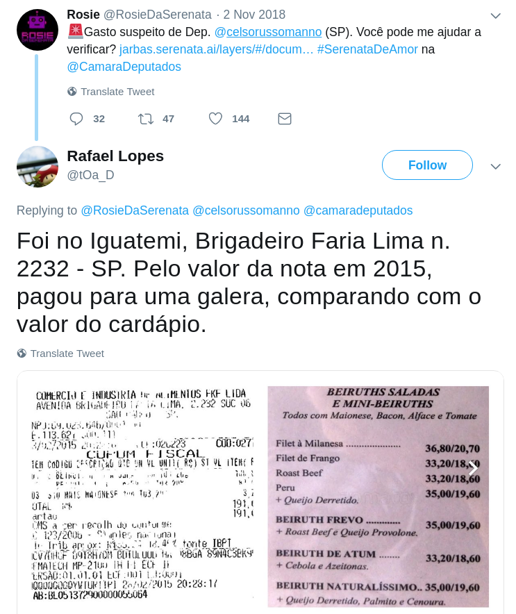R$ 191 em um restaurante cujos pratos não custam R$ 40, deputado?
twitter.com/tOa_D/status/1058495655184871425
(em conjunto com Juan Torres, para correio24horas.com.br)
Acesse a matéria
Base de dados: Balneabilidade (INEMA)
(em conjunto com Giulliana Biaconi, para generonumero.media)
Leia a matéria
Bases de dados: Candidaturas e votações (TSE)
Eleições
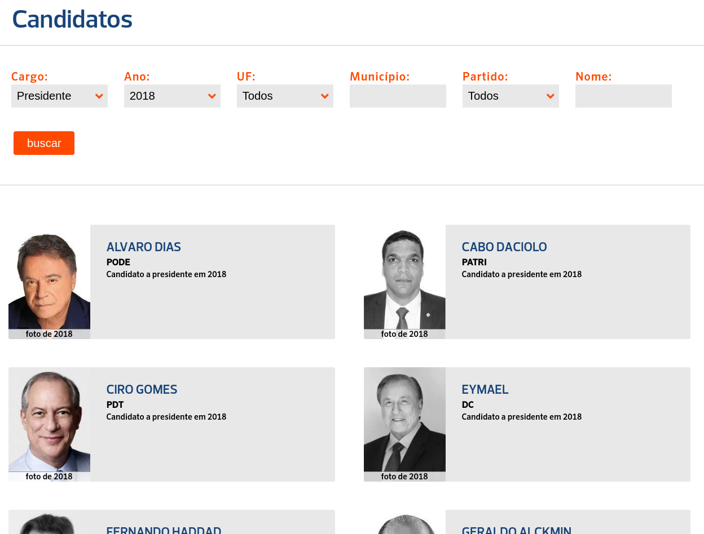(em conjunto com Voltdatalab, para poder360.com.br)
eleicoes.poder360.com.br
Bases de dados: Candidaturas e votações (TSE)
(em conjunto com Hélen Freitas, para Repórter Brasil)
Acesse a matéria
Bases de dados: Candidaturas e doações (TSE), infrações ambientais (Ibama e ICMBio)
Nome aos bois
(vencedora do Prêmio Gabo 2023) 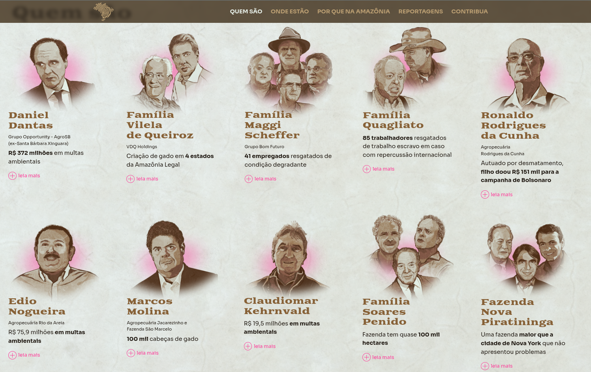nomeaosbois.reporterbrasil.org.br
Bases de dados: Candidaturas e doações (TSE), infrações ambientais (Ibama e ICMBio)
(em conjunto com Adriano Belisário, para apublica.org)
Acesse a matéria
Bases de dados: Web scraping do site do STF
(em conjunto com Fabiana Cambricoli, para O Estado de S. Paulo)
Acesse a matéria
Bases de dados: Web scraping do site do TJSP
Problemas
Maior parte do tempo dos projetos de análise de dados:
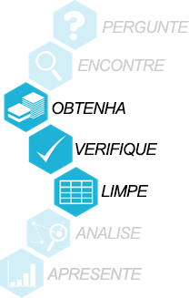
Problemas de segurança
Estrelando: PGFN
Migram-se os ministérios, sem dados
Estrelando: Ministério da Justiça
twitter.com/turicas/status/1112491956314259457
Nem sempre você consegue BAIXAR
Estrelando: Receita Federal
twitter.com/turicas/status/1114185311372873729
Nem sempre o dado é aberto
Estrelando: Imprensa Oficial do Governo do Rio de Janeiro
twitter.com/turicas/status/1091767340134514690
Formato não estruturado
Estrelando: INEMA/BA
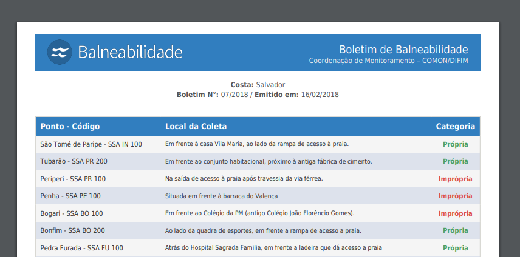github.com/turicas/balneabilidade-brasil
Não respeita o formato
Estrelando: TSE
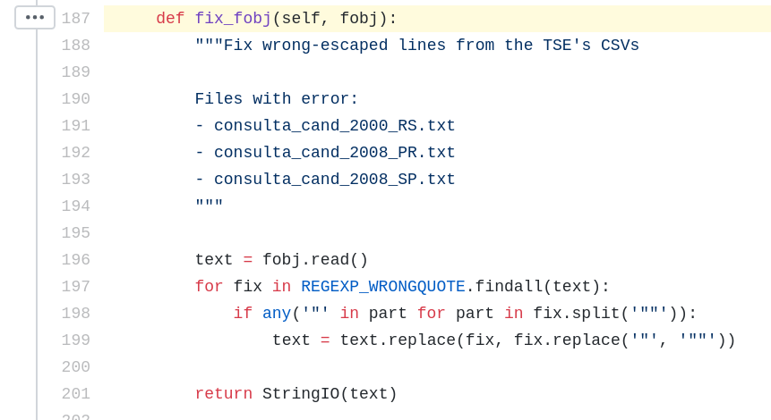github.com/turicas/eleicoes-brasil
Colunas mudam de nome
Estrelando: TSE
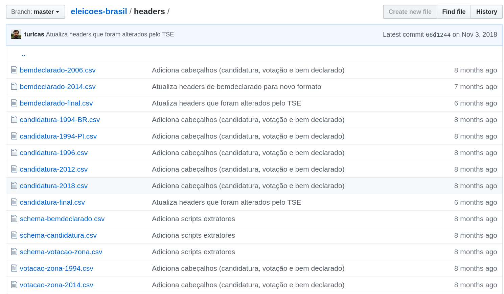github.com/turicas/eleicoes-brasil
Dado em formato proprietário
Estrelando: Receita Federal
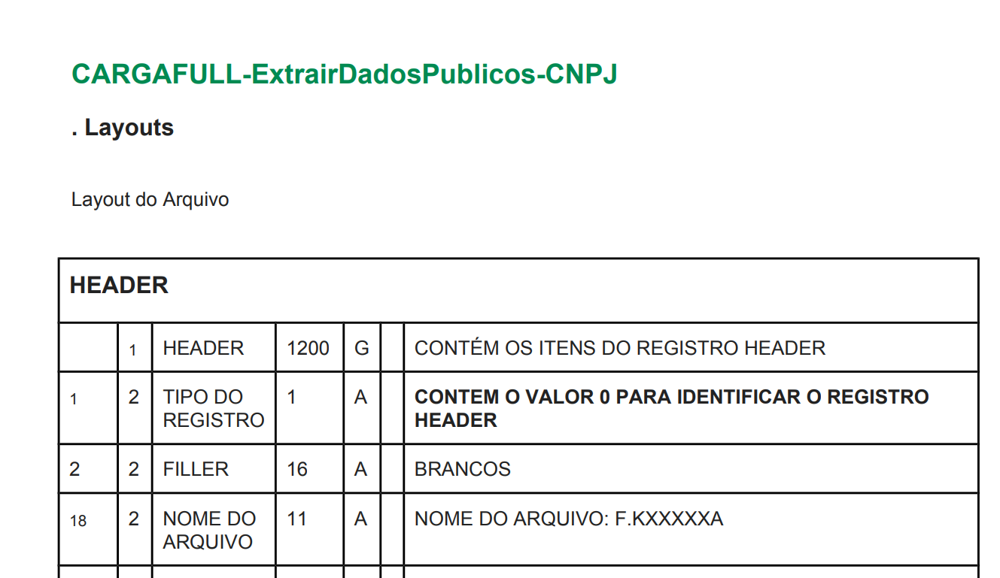twitter.com/turicas/status/959120200976224262
Nem sempre o dado está disponível
Estrelando: Governo de Rondônia
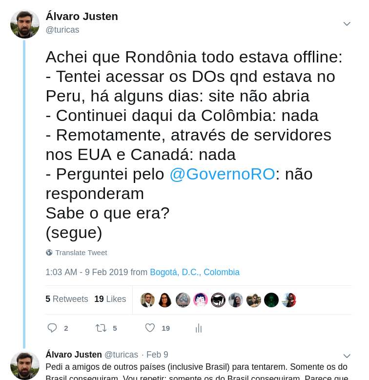twitter.com/turicas/status/1094069287206248450
Dado não mais disponível
Estrelando: Tribunal Superior Eleitoral
tre-es.jus.br
Dado ERRADO
Estrelando: Receita Federal
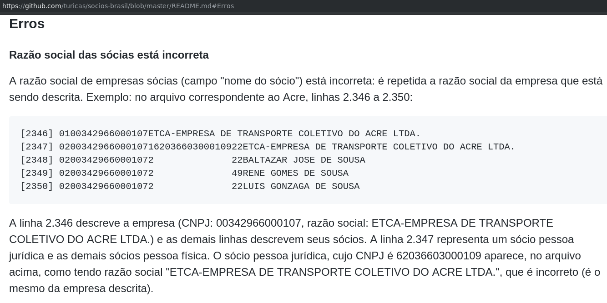github.com/turicas/socios-brasil
Nem sempre o dado é grátis (???)
Estrelando: Receita Federal
https://twitter.com/turicas/status/1019272233095745537
Brasil.IO
“ Restringir acesso a dados públicos é elitizar a democracia. ”-- Manifesto Brasil.IO
Brasil.IO COVID19
(com a ajuda de muitos voluntários)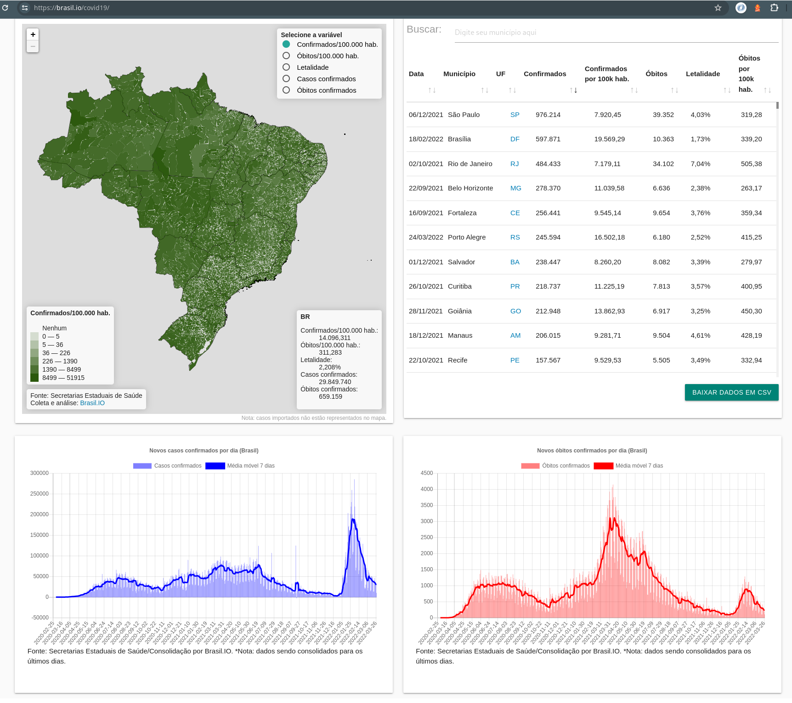
brasil.io/covid19
CruzaGrafos
(em parceria com a Abraji)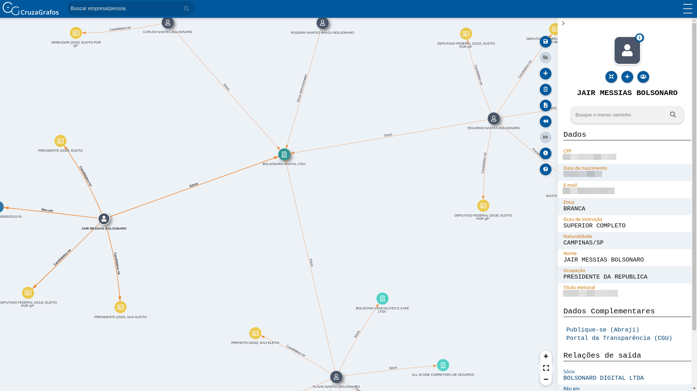
cruzagrafos.abraji.org.br
Monitor da Fiscalização do Desmatamento
(em parceria com o Mapbiomas)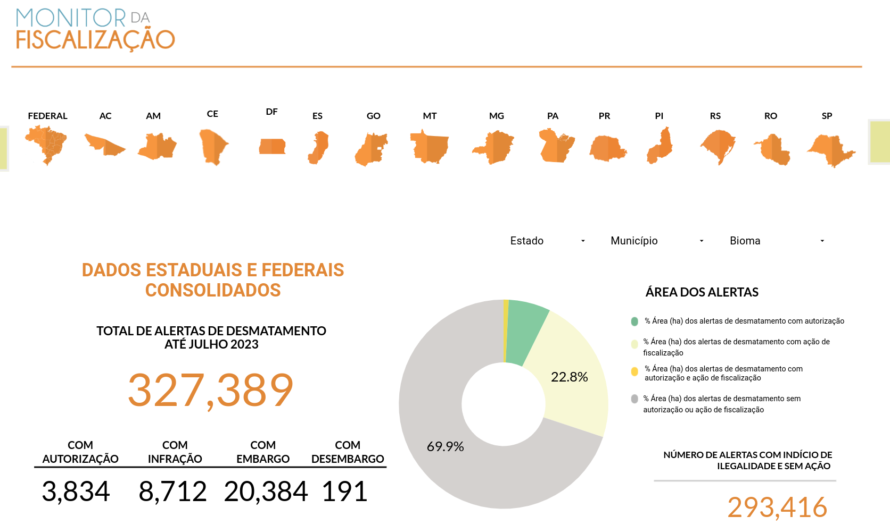
alerta.mapbiomas.org
VacinaBR
(em parceria com o Instituto Questão de Ciência)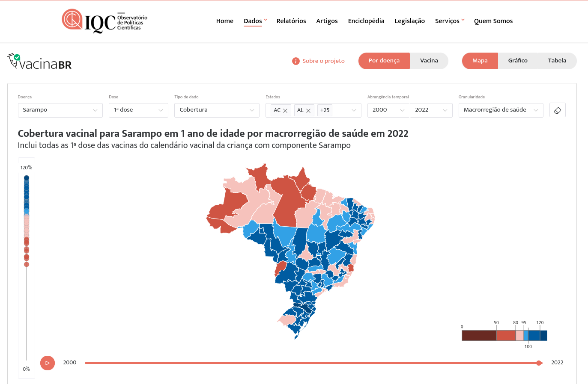
vacinabr.org.br